Driver Risk Score empowers Uber drivers with data-driven insights into their driving behavior, unlocking personalized safety quests and opportunities for continuous improvement.
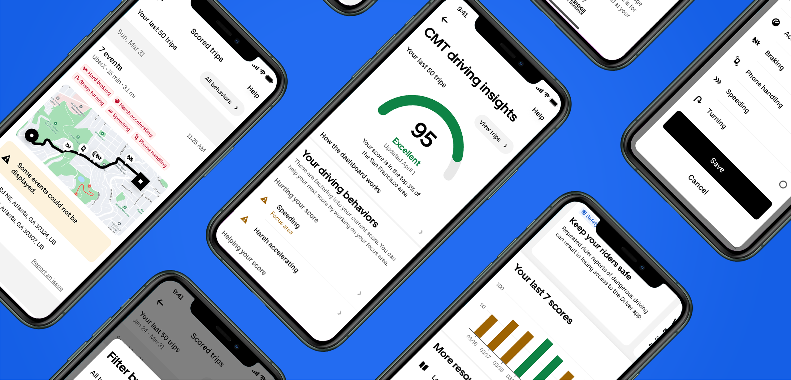
- Role
- Lead Product Designer
- Year
- 2024-2025
- Company
- Uber
Building on the success of Driving Insights, Uber's Road Safety team introduced a dedicated product surface focused on driving behavior tracking, risk scoring, and clear, actionable feedback. Leveraging CMT's technology, this initiative unlocked new opportunities to support drivers in adopting safer driving behaviors.
Key learnings from Driving Insights
Transparency is key
To combat mistrust, drivers should be able to know not only when, but where the behavior took place.
More data and guidance
Users not only wanted more data like tailgating and harsh braking, but required actionable feedback on how to improve.
Privacy
Drivers wanted information over their data and how it's used.
We had to provide users with the means to measure safe driving behavior and clear, actionable feedback.
We needed a way to motivate users to act on the feedback, while our end goal was to foster long term behavior change.
Design principles
Transparent
Clear explanations of the information and calculations can help inspire trust and push drivers to trust this tool and use it to change their behavior.
Simple
Intuitive interface, following in-app patterns and simple concepts should help with cognitive load from the overall experience.
Actionable
Specific feedback can help earners to be more engaged and change their behaviors.
Introducing the driving score
By introducing a score, we aimed to provide a place for drivers to quickly identify and understand their own driving behavior. Incorporating it into a social proof framework competition, motivating drivers to strive for higher safety scores.
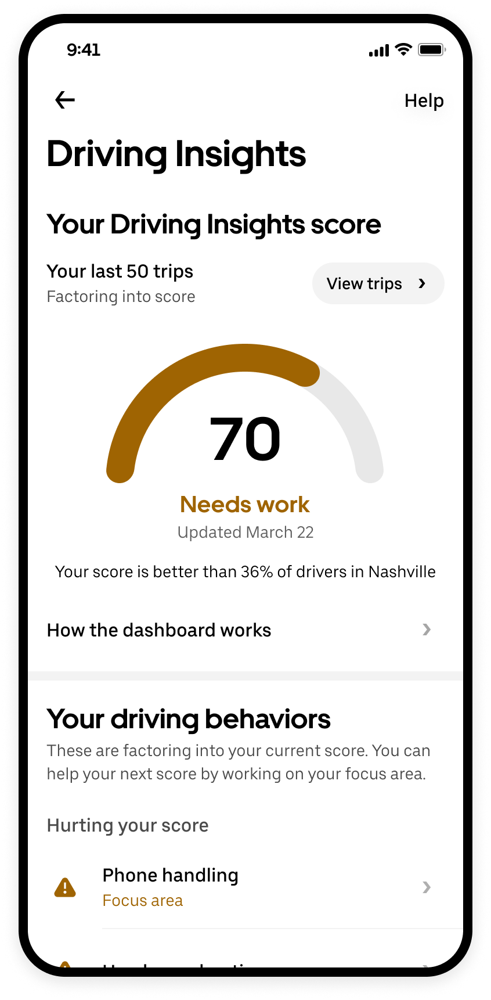
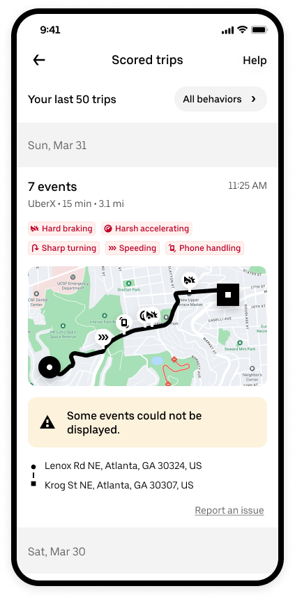
Optimizing hierarchy
The page hierarchy was carefully designed to maximize the use of screen real estate while delivering the right information at each step of the user journey.
The eye-catching main score would grab users' attention, while all necessary information would sit above the fold of most devices, including the entry point to view scored trips.
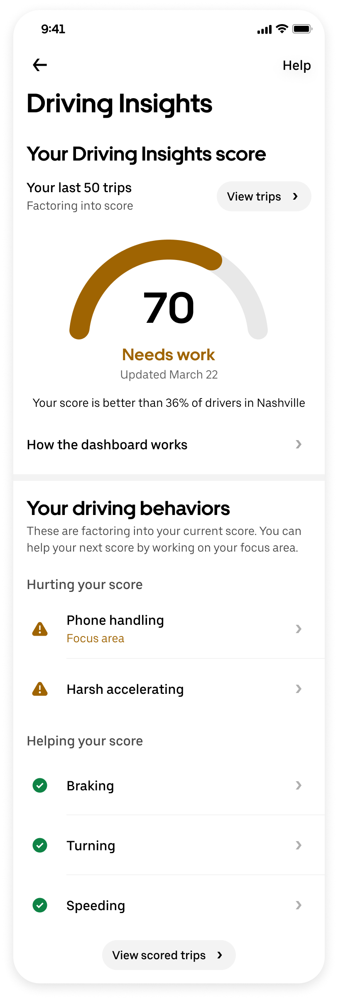
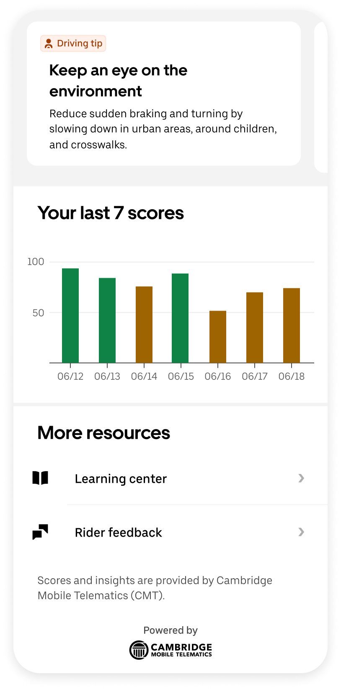
Transparency was non-negotiable, so CMT Risk Score included detailed information of driving behavior.
UI refinement
Each UI element was carefully crafted—from exploring entirely new ideas to working closely with established visuals from Uber's design surfaces.
Components were thoroughly explored to ensure they aligned seamlessly with the overall experience. Many components were adjusted from existing Driver experience components.
Trip detail component
Providing all the necessary information to users so they may evaluate the time and location of the behaviors detected.
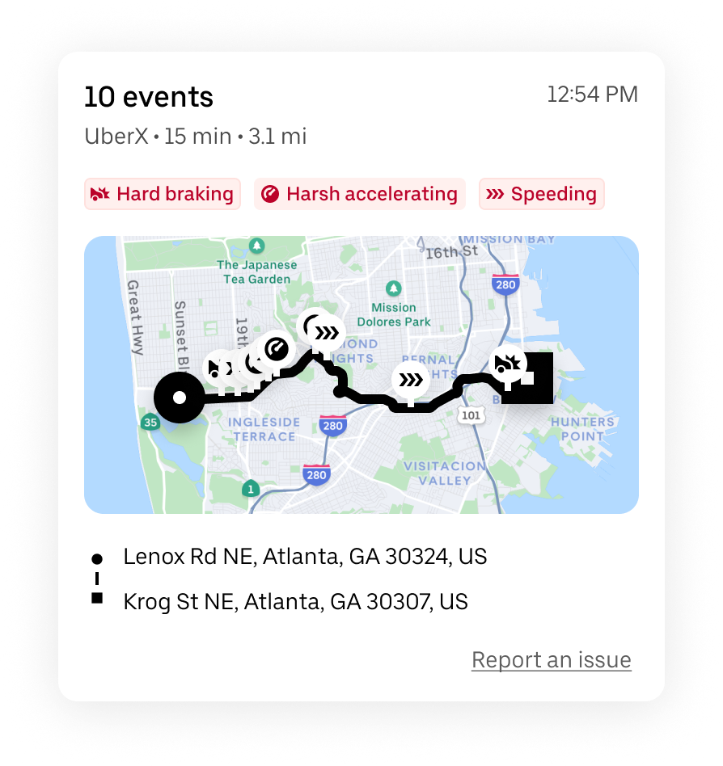
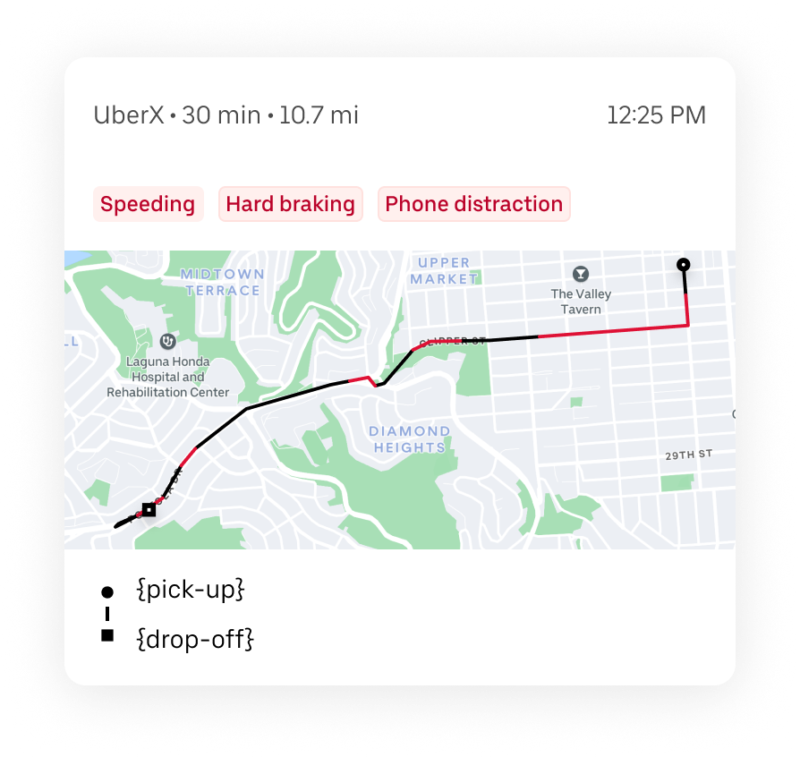
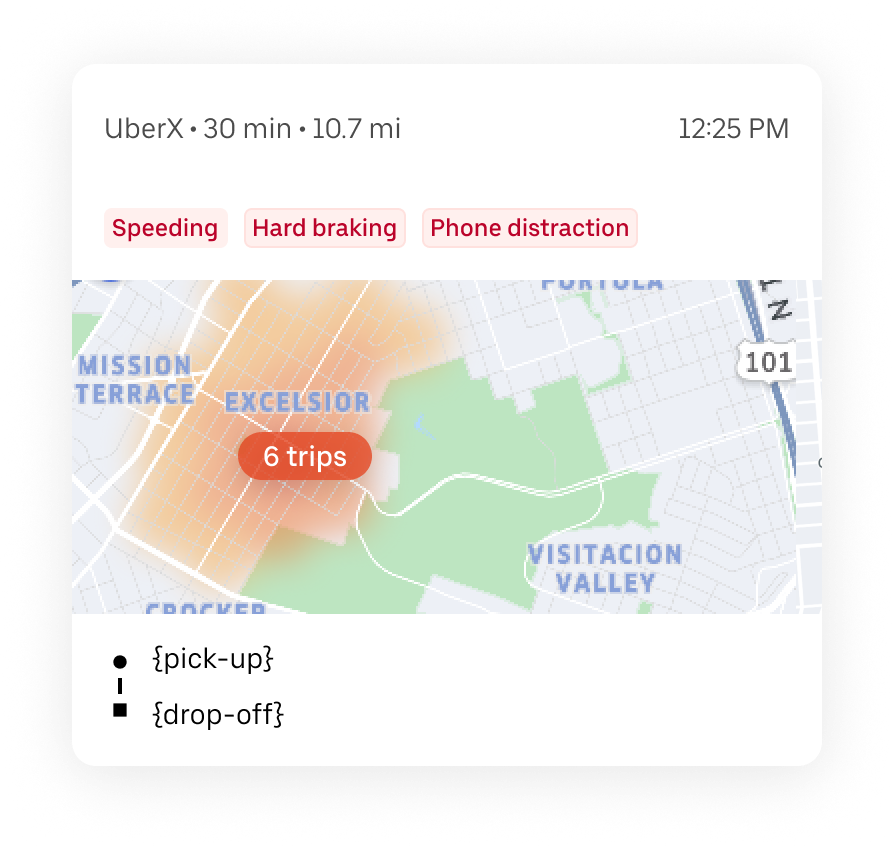
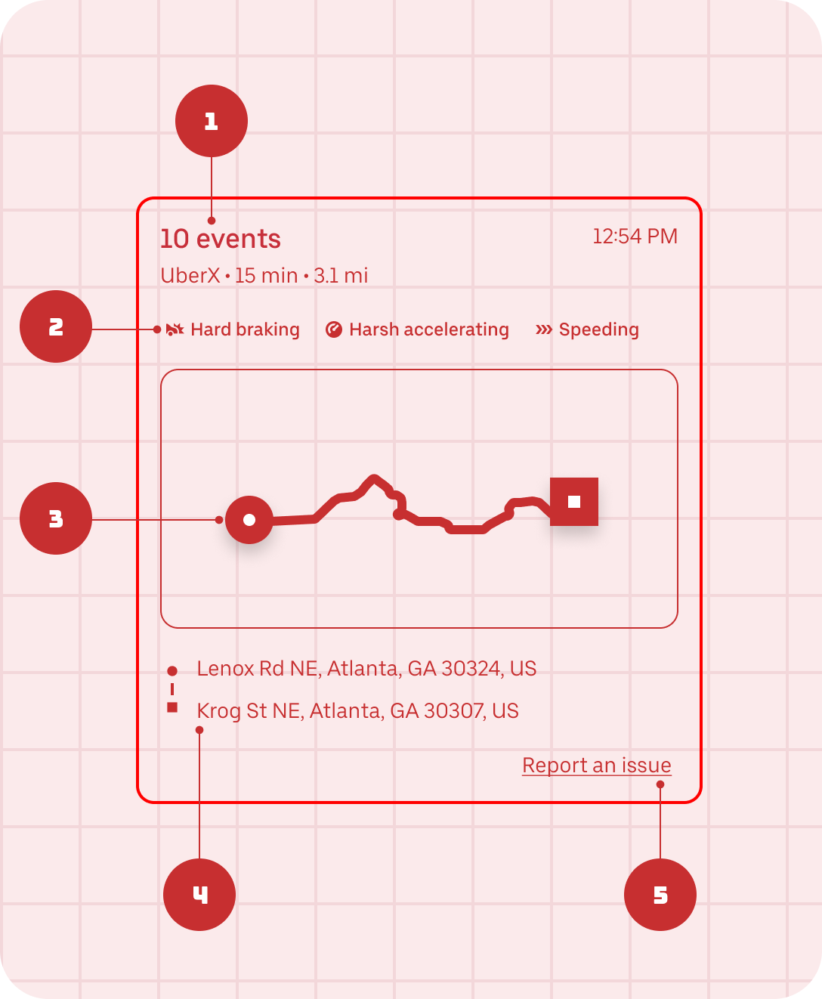
-
1
Trip metadata
All relevant trip information is displayed.
-
2
Behaviors detected
Behaviors are shown as tags that may be filtered by the user.
-
3
Map
The map displays behaviors as icons for further inspection.
-
4
Pick up and drop off
Beginning and end of trip are signaled.
-
5
Report an issue
If the user believes there is a problem with a detected behavior, they may reach out for questions.
Graph component
While Uber Design System had an existing graph, we explored new formats to better showcase progress to Uber Drivers. Once again, we worked on top of what we had previously created for Driving Insights.
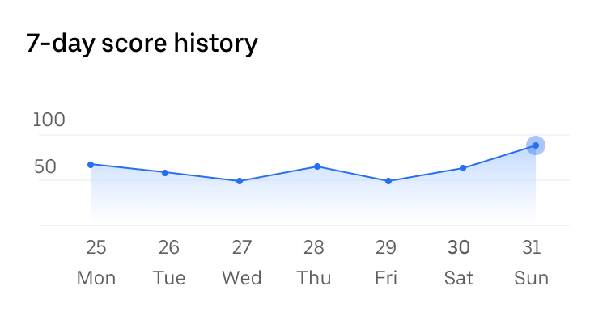
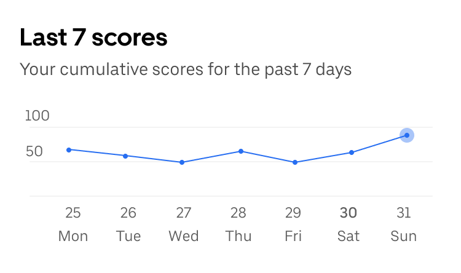
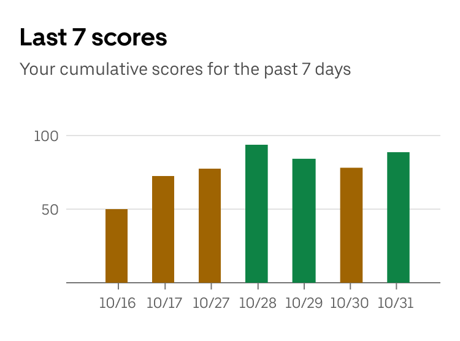
The results
CMT Risk Score unlocked new opportunities to support drivers in adopting safer driving behaviors.
The product is still up and running on Uber Driver app, constantly updated to foster safe driving behavior amongst drivers.